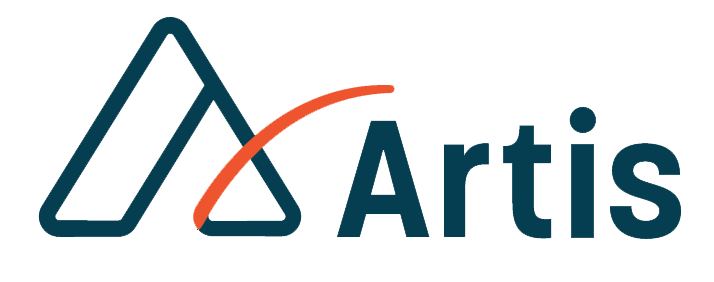

<ion-header>
  <ion-toolbar class="toolbar">
    <ion-buttons slot="start">
      <ion-menu-button class="menu-btn"></ion-menu-button>
    </ion-buttons>
    <ion-title text-center>
      
    </ion-title>
    <ion-buttons slot="end">
      <i class="fas fa-ellipsis-v"></i>
    </ion-buttons>
  </ion-toolbar>
</ion-header>
